Spell icons, batch 3: Pip, Kaia, Tempo, Hank, The Great Zambini, Wick, Lyra, Sefu
2026-11-16 · drawn with VectorCraft in the family of the sample (docs/icons/sample), version B (the picture at 118%, over the octagon's edge). Today's icon on the left, the new one on the right, each drawn the way the game draws it: a 128 px picture brought down to 64, 48 and 32 px. The last of each set is the new one in grey.
What I see
One sign per hero: Pip's gold wings on letters, parcels and his wrapped boot, Kaia's iron rods and thick bent lightning, Tempo's clock hands with their pale echo, Hank's rune-edged double axe and his pines, the Illusionist's tall hats and cards, the Doorwarden's arched doors full of lamplight and his brass key, Lyra's star-tipped arrows, Sefu's gold and lapis (cobra, crook, scarab, sarcophagus).
Cartoon left behind: the postman's yellow mailbox, the stage magician's purple box, the bellhop's doors with a gold star, the lumberjack's TIMBER! board.
Weakest: Lyra's Q and W are a bow and two arrows: clear at 48 px, thin lines at 32. The Illusionist's E and R both show hats (three in a row, three round a ring with swords). Kaia's Supercell and Barry's Lightning Risk (batch 2) both put lightning under a cloud; hers is a turning storm with three bolts, his one bolt on a mark. Redrawn after the last review (2026-11-16): Sefu's cobra was solid gold (gold is for edges); it is now the desert's colour with gold only on the hood's edge. His Sarcophagus (R) stays gold: the spell is a gold sarcophagus, the one exception.
Redrawn after a first look: Pip's Shortcut (a blue boot read as a modern sneaker; now a wrapped messenger's boot), Hank's TIMBER! (the fourth tree ran out of the frame), Sefu's Cobra Spit (a cobra seen from the front read as a microphone at 32 px; now from the side) and Scarab Stride (read as a caterpillar).
At 32 px
Each spell: today · new · new in grey · new under the desktop bar's key letter · new in the phone's round slot; brought down to 32 px, then shown twice larger.
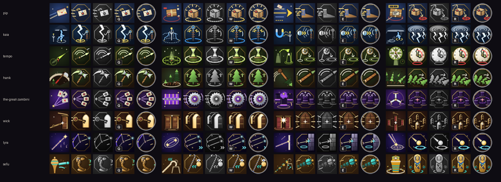
Pip the Wingfoot
Proposed row Wingfoot (src/kits/courier.ts): sun yellow on night blue; paper, string and the red seal as foils.
corehotbodyaccentdark
SpellTodayNew
QExpress LetterA letter flicked at the aim (8 m): 58 damage, +15 for each Charge he holds. He keeps them.
WFragileA parcel thrown at a spot (9 m). After 1 s it bursts, 2.5 m wide: 72 damage and a 1 s slow. Walk out of the ring.
EShortcutA sprint of up to 6 m. With a Charge he spends one and Shortcut is ready again almost at once.
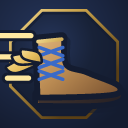
RFinal DeliverySpends all his Charges. A parcel with your name hunts you for 1.5 s (5 m/s), then bursts: 80, +40 per Charge, within 2 m. Touch cover first and you sign for it: it goes back.
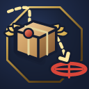
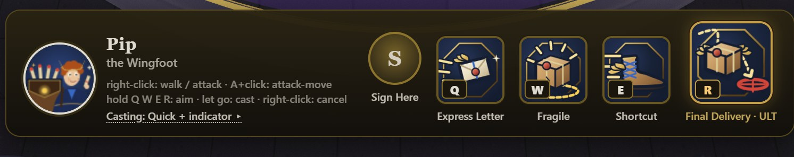
The spell bar, desktop (1280 wide)
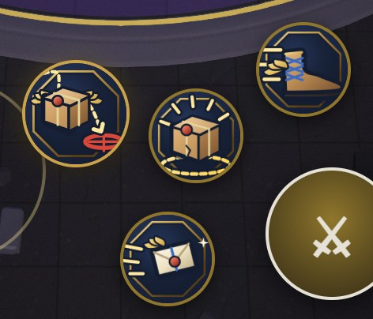
Phone (375 wide)
Kaia the Tempest Caller
The art bible's Storm row; iron and copper for her rods.
corehotbodyaccentdark
SpellTodayNew
QSky StrikeA strike falls on an enemy in sight (7 m) 0.35 s later: 60, and a rod stands 1.5 m in front of them, toward her. Rods within 5 m of them arc for 18.
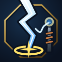
WThunder RodA great rod at a spot (9 m) for 3 s. From 1.2 s, each second: enemies within 3.5 m take 24 and are slowed. Cast again from 1.2 s to fire it once for 50 and end it.
EPolarityMagnetises an enemy in sight (8 m): 20, then after 1 s they are yanked 3 m toward her nearest rod (her, with none). Ending within 1 m of the rod: stunned 0.6 s.
RSupercellA storm over her for 6 s. Every 0.8 s, if the enemy is within 7 m of her or 3 m of a rod, a bolt marks their spot (1.2 m) and falls 0.6 s later: 32. Rods arc as normal.
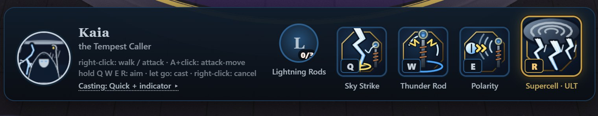
The spell bar, desktop (1280 wide)
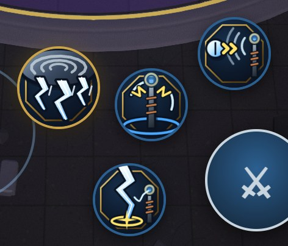
Phone (375 wide)
Tempo the Unwound Hour
The art bible's Chrono row, the ivory dial as its foil.
corehotbodyaccentdark
SpellTodayNew
QTickA spinning clock hand (9 m, 50). A direct hit takes 1 s off Tick. Echo: the same line again 1.5 s later, from where he stood, for 20.
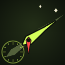
WSlow TimeTime thickens in a 3.5 m circle (9 m): after 1.2 s enemies inside take 30 and are slowed 2 s. He moves 30% faster inside for 3 s. Echo 1.5 s later: 12 and the slow again.
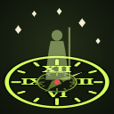
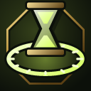
ETime SkipHe vanishes for 0.6 s (untouchable) and returns on the marker 6 m away with a pulse of 35. Echo 1.5 s later at the same spot: 14.
RStolen HourA clock face forms over an enemy (8 m); after 0.8 s, if he still sees them: 70 and slowed 2 s, and for 4 s his echoes hit at 80% and he moves 30% faster. Echo: 28.
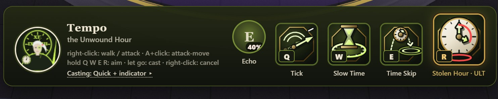
The spell bar, desktop (1280 wide)
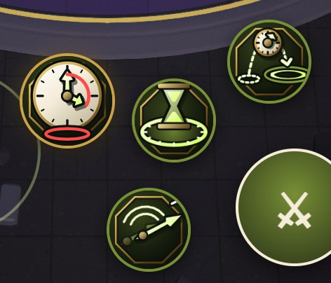
Phone (375 wide)
Hank the Moss Hewer
Proposed row Moss / rune (src/kits/timber.ts): the axe's rune green, warm wood as the accent.
corehotbodyaccentdark
SpellTodayNew
QAxe SwingA quick 3 m swing in front of him: 60. Any tree of his that the swing touches falls away from him along a strip 8 m long and 1.6 m wide, shown for 0.6 s: 30, 60 or 110 by its size. A stump stays.
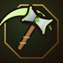
WFast GrowthGrows a tree at a spot up to 6 m away. After 0.7 s anything within 1.5 m of it takes 50 and is knocked up 0.5 s. A sapling has 30 HP and blocks nothing; young at 1.2 s (120 HP, real cover); full at 2.5 s. Two charges.
ECaber TossRips up the nearest tree within 3 m and hurls it 9 m end over end: 30, 60 or 90 by its size, and a knock-back. With no tree he throws his axe for 30, and Q is gone until he walks to where it landed.
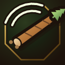
RTIMBER!Five trees grow in a row along the aim, 2 m apart: real cover. Recast within 4 s: he swings and they fall like dominoes along the row, 90 on whoever lies in the way (3 hits at most). Without it they fall harmlessly after 8 s.
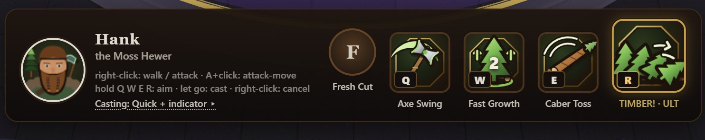
The spell bar, desktop (1280 wide)
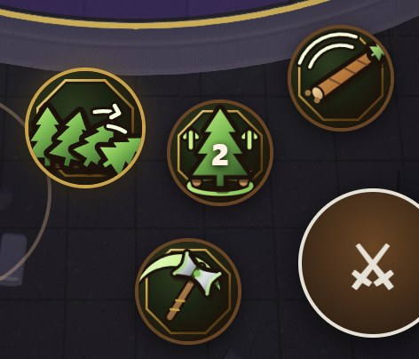
Phone (375 wide)
The Great Zambini the Illusionist
Proposed row Illusion (src/kits/magic.ts): violet, the cards' red pips as the accent.
corehotbodyaccentdark
SpellTodayNew
QCard SprayThree playing cards in a 24 degree fan (8 m): 26 damage each. Close up they are a wall; past 5 m stand in a gap.
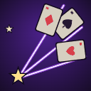
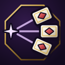
WSawn in HalfA saw blade slides at you (8 m, 18 m/s): 60 damage and slowed 1.5 s.
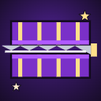
EThe Hat TrickThree hats shuffle at his feet for 1.5 s and he vanishes under one. Hit the right hat and he pops out stunned 1 s; a wrong one gives confetti. At 1.5 s he appears at his hat. An area spell hits all three.
RThe Grand FinaleHe vanishes. Three hats ring the enemy (radius 3 m) for 1.2 s, then swords fly from all three toward the centre: 30 each, stopped by walls. He steps out of one. Step out of the ring.
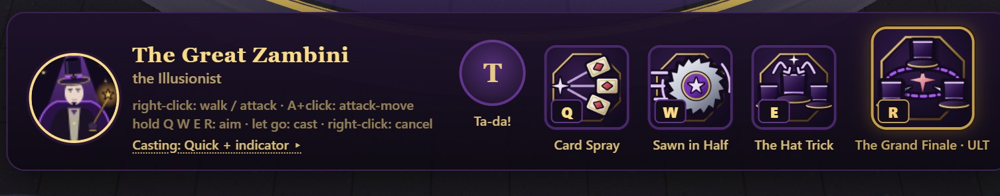
The spell bar, desktop (1280 wide)
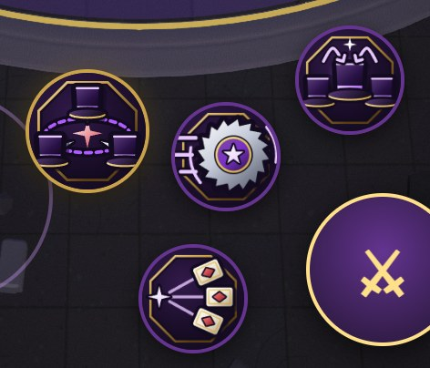
Phone (375 wide)
Wick the Doorwarden
Proposed row Threshold (src/kits/door.ts): lamplight through a door, brass, his crimson as the accent.
corehotbodyaccentdark
SpellTodayNew
QKey TossA brass key (9 m): 78 damage. It flies into a door and out of its pair, going the same way, and through all four doors of the Grand Lobby.
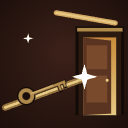
WDoorTwo charges (4 s each). A door at a spot (9 m) for 10 s, 40 HP, two at a time with the same number. Anyone who walks into one leaves by the other, and so does a bolt, whoever shot it.
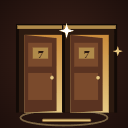
ESlamBoth doors slam: 70 damage and a 0.5 s stun on an enemy within 1.5 m of either door, after 0.7 s.
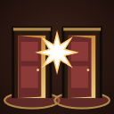
RGrand LobbyFour tall doors ring the enemy (3 m, 9 m, in sight) for 4 s. Walking into one sets you down at the far side of the ring, and his Q flies through them all. The gaps are 2 m.
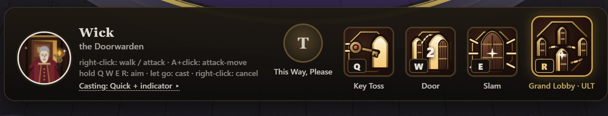
The spell bar, desktop (1280 wide)
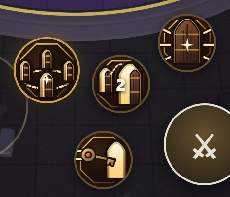
Phone (375 wide)
Lyra the Star Archer
The art bible's Astral row, the sky chart as its foil.
corehotbodyaccentdark
SpellTodayNew
QStarfall ArrowHold to draw for up to 1 s: the range grows from 9 to 14 m and the damage from 29 to 58. At full draw the arrow pierces, and a full-draw hit takes 3 s off Pinning Arrow.
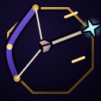
WTwin StarsFor 5 s her basic attacks loose two arrows, the second at half damage, and she moves 20% faster.
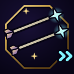
EPinning ArrowAn arrow (9 m, 0.3 s wind-up): 35. Within 1.5 m of a wall or pillar the enemy is pinned (rooted 1.5 s); anywhere else they are 40% slower for 1.5 s.
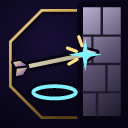
RMeteor MarkUltimate. A star locks onto the enemy (14 m) and follows for 1.5 s, then fixes on their spot; 0.9 s later a meteor strikes it (1.8 m): 120 plus 25% of what she dealt meanwhile.
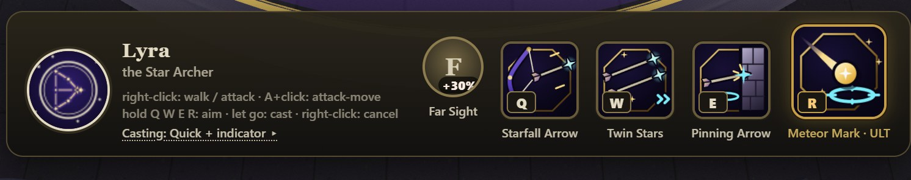
The spell bar, desktop (1280 wide)
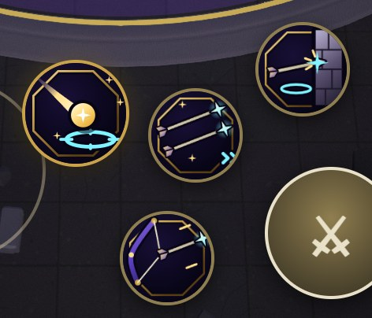
Phone (375 wide)
Sefu the Dune Sovereign
The art bible's Sand row; gold and lapis for the crook, the cobra and the sarcophagus.
corehotbodyaccentdark
SpellTodayNew
QCobra SpitA cobra rears and spits venom 9 m down the aim: 62 damage and blinded 1.2 s on the first enemy it touches. Half the cooldown back when it hits a Judged enemy. Step off the line to dodge it.
WShepherd's CrookHe hooks the crook round an enemy 6 m away (he must see them) and drags them 3 m toward him: 35 damage and slowed 0.5 s. The enemy is Judged for 3 s.
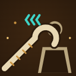
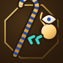
EScarab StrideHe skitters 6 m down the aim as a stream of scarabs in 0.5 s, the line shown as he starts. Running through an enemy bites: 30 now, then 30 poison over 2 s. He can still be hit.
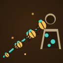
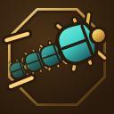
RSarcophagusA gold sarcophagus rises at the enemy 9 m away (he must see them). 0.7 s later, if they are still inside its 1.6 m circle, it shuts: sealed 1.2 s, unable to act and unable to be hit. It opens in scarabs: 110 damage and Judged. Step out and it shuts on nothing.
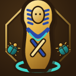
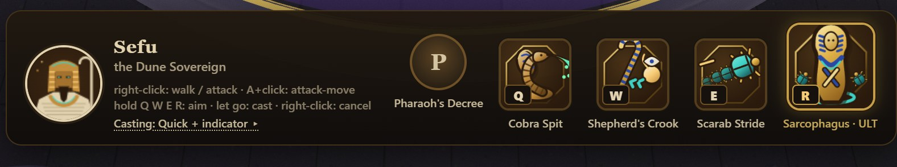
The spell bar, desktop (1280 wide)
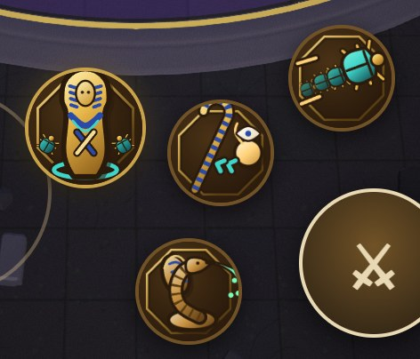
Phone (375 wide)
File sizes
The SVGs the game loads (public/icons/spells/), only when a hero's slots are first drawn.
Icon
SVG
gzipped
pip-e
7.9 KB
1.6 KB
pip-q
6.1 KB
1.3 KB
pip-r
9.5 KB
1.7 KB
pip-w
6.1 KB
1.3 KB
kaia-e
5.9 KB
1.2 KB
kaia-q
5.2 KB
1.2 KB
kaia-r
5.7 KB
1.4 KB
kaia-w
5.5 KB
1.1 KB
tempo-e
7.2 KB
1.5 KB
tempo-q
4.7 KB
1.2 KB
tempo-r
7.3 KB
1.4 KB
tempo-w
6.9 KB
1.3 KB
hank-e
5.4 KB
1.4 KB
hank-q
8.8 KB
2.0 KB
hank-r
7.4 KB
1.8 KB
hank-w
6.3 KB
1.4 KB
the-great-zambini-e
9.5 KB
1.8 KB
the-great-zambini-q
9.2 KB
2.1 KB
the-great-zambini-r
11.6 KB
2.1 KB
the-great-zambini-w
6.0 KB
1.5 KB
wick-e
5.6 KB
1.1 KB
wick-q
5.3 KB
1.2 KB
wick-r
12.2 KB
2.0 KB
wick-w
6.8 KB
1.4 KB
lyra-e
5.8 KB
1.2 KB
lyra-q
5.0 KB
1.2 KB
lyra-r
4.2 KB
1.2 KB
lyra-w
7.0 KB
1.4 KB
sefu-e
16.5 KB
2.6 KB
sefu-q
9.0 KB
2.1 KB
sefu-r
13.3 KB
2.2 KB
sefu-w
5.4 KB
1.2 KB
All 32
238.1 KB
49.2 KB
Files: the drawings pipeline/icons/vectorcraft/draw/<hero>.py, the shared rules vclib.py, the runner make.py, this page page.py (batches.json holds the notes).